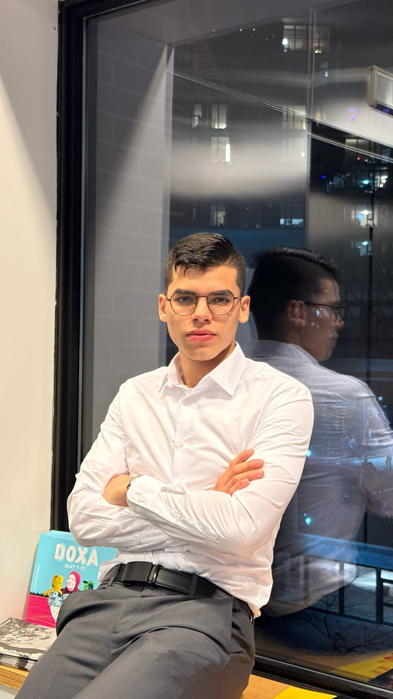

 My
blog
My
blog
 My
email
My
email
 Telegram
Telegram
 LinkedIn
LinkedIn
 GitHub
GitHub
Made with ❤️
Said Neder
CompTIA A+ | AWS CCP | ISC2 CC
IT Technician at
Centrum Concierge & Security Ltd.
2nd year Mathematics and Computing student at
Simon Fraser University
in Burnaby, BC. 🇨🇦
Made with ❤️